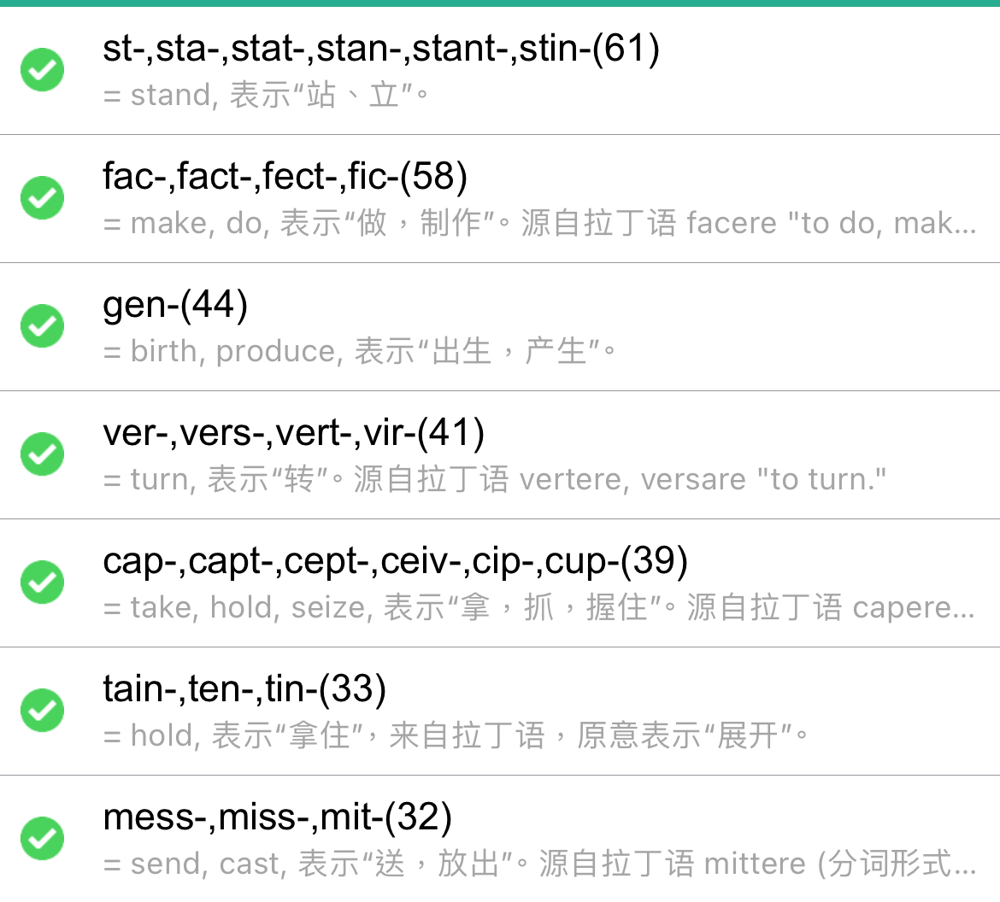
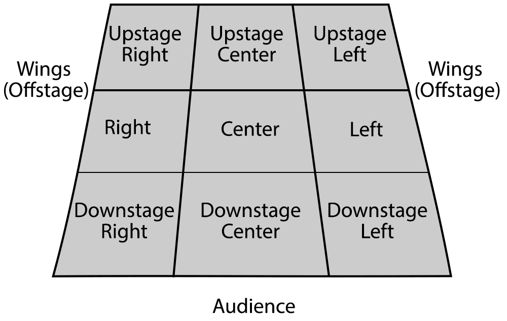
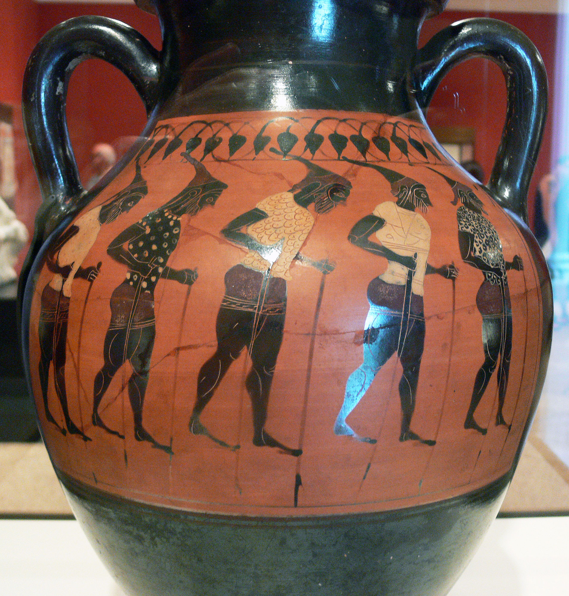
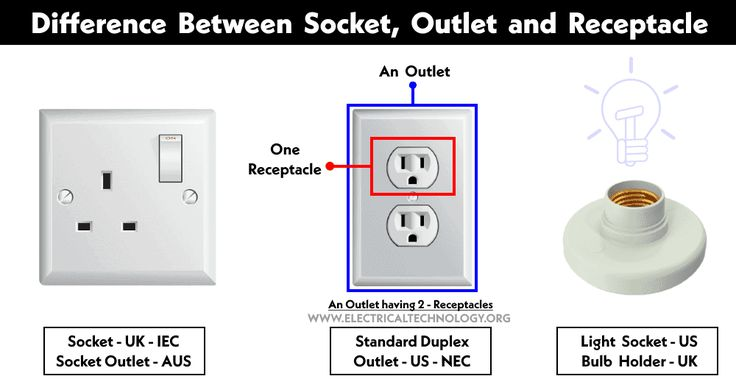
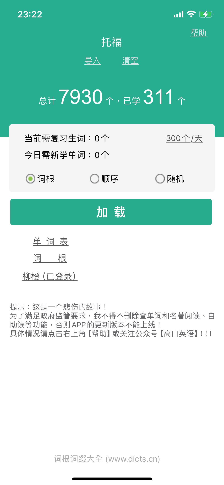
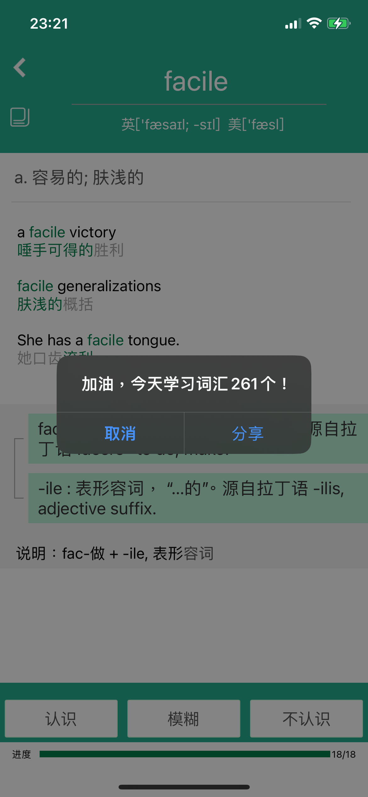

按我自己的习惯一天300个花太久时间了，需要不间断的好几个好小时，所以花3天背完这些之后改成一天百词。
背300个词花了一周(2024-03-06)，光这么点词就有下面这么多问题——
- tenement
- apartment, estate
- Historically, the word "tenement" meant any permanent residential property used for rental purposes. It could refer to houses, land, and other buildings and the rights attached to this property.
- "dominant tenement" is an estate with the benefit of an easement, while a "servient tenement" is an estate that is subject to the burden of an easement.
- tenant是房客！
- landlord是房东！
- vertigo = vert-(turn) + ig-(ag-, ig-, ass-: do, act) + o = 转着做 = 眩晕
- agent, agency
- agenda = ag-做 + -end + -a表复数 = 议程
- ambiguity = ambi-(both 两边) + ig-做 + uity(noun form) = 不明确，ambiguous
- litigate = lit-诉讼(争论) + ig-做 + -ate(verb form) = 提起诉讼，sue/charge/lawsuit
- navigate = nav-船 + ig-做 + -ate(verb form) = 导航
- essay
- exam, exsamine
- facile 肤浅的容易的 /ˈfæs.aɪl/ → facility facilitate
- ecstacy ecstatic , static stasis
- intermit间断、中断mis- send；intercept拦截cept- seize, hold；interrupt中断、打断
- mal-: malcontent, malfeasance, malign
- malfeasance, feasible
- malfeasance vs. remiss都是失职渎职，检索无结果，malfeasance坏事=mal-坏+feas(noun form+ance)事 you
- remiss, surmise, demise是几个很像的miss-(send)
- malefactor = male- + fact- + or = 坏人/犯人/罪人 /ˈmælɪfæktər/
- maleficent /məˈlefɪsənt/做坏事的，malefic /məˈlefɪk/邪恶的 maleficence /məˈlefɪsəns/罪行，罪恶（跟malfeasance坏事相近）
- malfeasance vs. remiss都是失职渎职，检索无结果，malfeasance坏事=mal-坏+feas(noun form+ance)事 you
- malign align benign
- align = ad-去往 + lign-(line) = 成一条线 = 排列
- malign = mal-坏 + gn- = 出生坏的 = 诽谤
- benign = beni- + gn- (bene-+ gen) = 出生好的 = 良性的
- malfeasance, feasible
- attain vs. obtain vs. gain WordCmp.com挺不错的
- attain and obtain could be used as synonyms but "obtain" slightly implies more effort
- obtain means to possess via effort.
- attain means to reach a goal.
- gain means to make a profit. One can gain something with effort or without any effort whatsoever.
- retain
- retain的noun form是retention
- retainer vs. steward检索不到，很多可以表示仆人管家的词
- retainer vs. factotum(= fac-做 + tot-(all, whole, total) + um = 做所有事 = 总管)
- factotum is a hyponym(下义词) of retainer; that is, factotum is a word with a more specific, narrower meaning than retainer:
- retainer: a person working in the service of another (especially in the household)
- factotum: a servant employed to do a variety of jobs
- retainer vs. servant
- retainer is a hypernym(上义词) of house servant; that is, retainer is a word with a broader meaning than house servant:
- house servant: a servant who is paid to perform menial tasks around the household
- retainer: a person working in the service of another (especially in the household)
- abstain and obstinacy，长得有点像，但是
- abstain = abs-(away from离开，跟下面apo一样，但这里是abs-/ab-; 或opposite/not否定) + tain(hold) = 不再拿住 = 弃权；戒，戒除
- to abstain from alcohol/ sex/ drugs
- obstinacy = ob-反(ob-: before; against) + stin-站 + noun form = 反着站，顽固，顽固行为
- abstain = abs-(away from离开，跟下面apo一样，但这里是abs-/ab-; 或opposite/not否定) + tain(hold) = 不再拿住 = 弃权；戒，戒除
- obstinate vs. tenacious
- Basically, "obstinate" has a negative connotation while "obstinate" has a good one.
- You use "tenacious" when you are speaking positively about someone.
- You use "obstinate" when you are speaking negatively about someone.
- pertinacious vs. tenacious同词根同词缀同意思(只多了个per)
- stubborn vs. above all
- while all four terms describe individuals who persist in their beliefs or actions despite opposition, obstinate emphasizes inflexibility, tenacious emphasizes perseverance, pertinacious emphasizes holding firmly to beliefs, and stubborn is a broader term encompassing resistance to change or compromise.
- sustain = sus-下面(sub-: under, 见17) + tain-握住 = 在下面把握住 = 支撑
- sustenance生计，生活资料，支持也是ai→e
- detain = de-加强 + tain-(hold) = 拿下 = 扣押
- attain and obtain could be used as synonyms but "obtain" slightly implies more effort
- apostate = apo-(away, away from) + st(stand) + ate 叛教者, apostasy变节；脱党【əˈpɒ】
- traitor renegade rebel defector
- apocalypse = apo-离开 + calyps-隐藏 天启，apocalyptic末日的就是这个词缀【əˈpɒ】
- apology = apo- + log-说 = 退后一步说 = 道歉【əˈpɒ】
- apologue = apo + log + ue = 寓言【/ˈæp.ə】
- apoplexy = apo- + plexy打击 = stroke中风【/ˈæp.ə】
- apogee = apo- + ge-(geo-地) = 远地点，最高点，极点【/ˈæp.ə】
- effective vs. efficient
- effective说的是好效果（结果efficacy /ˈefɪkəsi/），efficient说的是好效率（过程速度efficiency）
- = ef-(ex-, "out of; away from"，跟上面apo一样，这里在f前同化为ef-，在辅音前缩写成e-) + fect-(make, do) = 做出来（的效果/效率）
Effective是「有效的」，著重在帶來的改變，也就是「效果」，例如：
This is the most effective medicine for sore throat. （這是治喉嚨痛最有效的藥。）
法律法規生效也用effective：
The new law becomes effective on January 1st. （新法規一月一日起生效。）
Efficient是是「有效率的」，著在「速度、時間」，在很短的時間裡，就能夠完成一件事，因此英文裡說：
He is an efficient manager. 他是一位辦事效率高的經理。
It is not efficient to hire poorly trained workers. 僱用未經嚴格訓練的工人會妨礙工作效率。
- solid(firm and stable in shape, not liquid or fluid; dependable, reliable.), stolid(calm, dependable, and showing little emotion or animation.) 都有dependable的意思，但是stolid can only describe people
- they spoke for a solid 15 minutes.
- indigenous本土的, endogenous内源的, endo-: within（见43muni-）
- local vs indigenous, indigenous is more like the people who's family ancestry is from an area and locals are individuals who resides in that area presently
- anti-: before, in front of; against，前面/先；反对两种意思，前面/先这种意思之前没意识到过
- anticipate预期；预先准备；先于...做
- anticipate vs. expect: interchangeable只有nuance细微差别
- anterior先前的
- ancestor, ancestry = an-(ante-前面) + cest-(cess-走) + -or(人)，走在前面的人
- anticipate预期；预先准备；先于...做
- refectory dining hall cafeteria canteen buffet restaurant
- -ory名词后缀表示地方，factory，refectory，dormitory，depository，territory，directory，laboratory（英音不一个念法）
- ol-是味、嗅觉adj. olfactory=olfactive, n. olfaction, or-是口、嘴的oral orifice，ped-是foot脚的pedestrian crossing
- pedestal(地基 = ped- + st- = 脚站的东西) pedestrian行人
- genesis vs. origin基本上一样
- origin: source
- genesis: process，更多暗示由来的过程
- versant proficient experienced practiced都差不多啊..（见57）
- counterfeit surfeit forfeit
- surfeit这里的sur是over, surmise这里的sur是sub/sus/sup表示 under(见7)
- susceptible易受影响的，suspect怀疑/嫌疑人，surmise臆测/推测
- surmise vs. guess
- Guessing is more like random picking. Surmising is more like making a conclusion based on some logical reasoning.
- vs. conjecture vs. supposition都是猜
- instate, invert, incept
- in-: en- im- il- ir- 1.not, opposite of, without; 2.into, in, on, upon 3.使
- instate = in- + st- + -ate = 任命
- invert = in- + vert-(turn) = 颠倒
- invert vs. revert(Merriam-Webster)
- reverse is the most general term and may imply change in order, side, direction, meaning. transpose implies a change in order or relative position of units often through exchange of position. invert applies chiefly to turning upside down or inside out.
- reverse vs. revert
- re: backward; again, 往回，相反；再
- reverse是颠倒，相反，反转，verb noun adjective form都有
- revert是回复，恢复
- invert vs. revert(Merriam-Webster)
- incept: 1. to begin or introduce something; 2. to successfully finish university with a degree
- diverse divert diversion，震惊，还有个divers（不是diver潜水员的复数）
- diverse vs. divers 不同的 vs. 若干个
- "diverse" is a commonly used adjective that describes variety or difference, while "divers" is an older term that is less frequently used and can refer to either a numerical quantity or individuals who engage in underwater diving activities.
- divert和diversion是分心
- diverse vs. divers 不同的 vs. 若干个
- remit老记不住
- re-再 + mit-送，再送出去：1.vi汇款；2.n移交的东西；3.宽恕/推迟/缓解（这个意思记不住）
- unremitting用的是意思3，不缓解/不推迟，即不懈的、不断的、坚忍的
- remission也是意思3，减刑；缓解；费用减少remission of debts
- remittent是张驰性的，用的大概也是意思3
- remittance就是汇款，意思1了
- perverse
- per- 完全，自始至终，向前forth ford
- pertain = per自始至终 + tain = pertaining to关于
- pertinent = per-完全 + tin-抓住 + ent = 相关，切题的，pertain的形容词又是ai→i，pertaining和pertinent是interchangeable
- perceive vs. comprehend 完全
- When you comprehend something, you are using your intellectual intelligence. You grasp the meaning of something. 理解
- When you perceive something, you are using your instincts. It is the impression something gives you. 感知，察觉
- percept(n.) vs. perception(n.) vs. perceive(v.) 都是感知，前两者中percept是运用各种感官的perception的结果idea
- Perception usually combines several sensations into one thought or percept. The percept, of course, is a mental state corresponding with its outside object. A percept is the product of Perception, or in other words, our idea gained through Perception.
- per- 假坏
- perverse = per- + vers-(turn)往坏转，歪曲的，有悖常情的
- pre- 之前
- precept = pre- + cept(hold, seize) = 之前拿住的 = 规训，规矩
- per- 完全，自始至终，向前forth ford
- deceit deception 欺骗，ei→e少了i，跟retain的名词ai→e似的
- de-(离开，向下；引申义：完全/加强（彻底离开），没有/相反（离开）) + ceit-(take hold seize)
- staid, stay
- sta-(stand) + -id如...的 = 古板的，保守的
- staid是stay过去分词古拼写，stay- 本身就是词根
- benefactor sponsor donor
- benefactor跟donor基本一样，都是不求回报的捐助者
- sponsor是求回报的赞助者
- obverse observe
- eco-(生态，eco本身就来自ecology)
- ecosystem生态系统，economics经济学（-nomy学说/管理，-ics学科/学术）
- “Ad” & “Advert” are simply Abbreviations of the full word “Advertisement”
- homeostasis, homogenous, heterogeneous
- 内部平衡
- homeo-(same) + stasis静止 = 内环境稳定
- 同质的
- homo-(same) + gen- + -ous
- 异质的
- a heterogeneous collection of buildings一群风格迥异的建筑
- cognate co-(with together) + gn-(出生) + -ate = 一起出生的 = 同种的同源的
- homogenize使雷同；使均匀
- 内部平衡
- upstage offstage stagecoachstagy
- 后台，幕后，马车(stage驿站+coach马车) ，戏剧的/戏一般的（stage舞台形容词）

- 后台，幕后，马车(stage驿站+coach马车) ，戏剧的/戏一般的（stage舞台形容词）
- traverse, travel遍历和旅行词根居然不一样
- tra-(across横穿，穿过) + vers-(turn) + -e = v.横穿横渡; n.横越
- transverse vs. traverse
- transverse(adj.) /trænzˈvɜːs/ means in a position or direction that is at an angle of 90° to something else. 横切的
- traverse(v.) /trəˈvɜːs/ means to move or travel through an area.
- principle，principal原理和最重要的/校长
- prin-: first, chief
- cip
- le, al俩词也是同词缀同词根不同意思
- stationery，stationary文具和静止的
- tenacious 固执的不屈不挠的，tenable站得住脚的，都是ten- hold/seize的形容词（可能因为-able是表示有能力）tenement tenacious tenable tenacity（见7）
- official是官方的，officious是非官方的、多管闲事的
- artificial fictitious区别？factitious fictitious，同词根同词缀同意思
- engender generate都是产生，produce emerge，同词根不同词缀但同意思
- abstain abstinent，同词根同词缀不同意思
- pertinent = per-完全 + tin-抓住 + ent = 相关的, "tinent"
- perceive和percept（21已经讨论过了）
- retain retention retentive，这三条和33上面都有
- emitter(transmitter, interchangeable), emission, emissary(/ˈemɪsəri/, spy? no, emissary is a person sent as a diplomatic外交 representative on a special mission. 是使者不是间谍，词典有误)
- inconstant vs. changeable vs. unstable
- gentle genteel意思相似
- muni-: duty, work, public（跟11的endo- 对比一下）
- munificence: extremely generous
- communist
- communicate
- commune巴黎公社
- municipal市政的，自治区的，内政的
- conceit自负 conceive想象 concept概念——同词根，同词缀，不同意思
- vs. imagine To conceive means to come up with a plan or an idea. To imagine means to form a mental image or concept.
- discomfit受discomfort影响(!??)，make (someone) feel uneasy or embarrassed, 使不舒服
- controvert, incontrovertible有点长indubitable, undoubtable, indisputable, undeniable, unquestionable
- controvert vs. debate
- while both controverting and debating involve discussing or arguing about a topic, controverting specifically emphasizes opposing or challenging a claim, while debate involves presenting and discussing multiple viewpoints in a structured manner.
- controvert vs. debate
- cater是动词！v.迎合（需要）
- armistice = armi- + st- + -ice(noun form) = 武器停止，即休战
- recuperate compensate revert recover restore Recoup
- omit vs. vomit
- omit = o-(before, against见7讨论过ob) + mit-(send) = 送出 = 省略，遗漏
- Don't omit locking(to lock) the door.
- vomit不同词根，vom- vomit-表示吐，来自weme
- emetic = emet- + -ic = n.催吐剂adj.引起呕吐的
- omit = o-(before, against见7讨论过ob) + mit-(send) = 送出 = 省略，遗漏
- captious vs. picky
- Captious:
- "He has a captious nature and always finds faults in everything."
- "Her captious comments made it difficult to have a constructive conversation."
- Picky:
- "She's a picky eater and only likes a few specific foods."
- "He's very picky about the clothes he wears and always wants them to be just right."
- While both words refer to someone who is critical or selective, "captious" often implies a tendency to find faults or criticize excessively, while "picky" suggests being selective or particular about choices.
- Captious:
- faciton vs. fiction词根不同，fact-做+ion(一起做事=派别/集团)，fict-(figura/fingere, form or shape形成/捏造=小说)+ion
- subvert (rebel→subvert) subversive
- 煽动颠覆国家政权罪（英语：Inciting subversion of state power），是中华人民共和国的一项刑事罪名，现始于1997年《中华人民共和国刑法》第105条第2款，取代反革命罪，内容为“以造谣、诽谤或者其他方式煽动颠覆国家政权、推翻社会主义制度的，处5年以下有期徒刑、拘役、管制或者剥夺政治权利；首要分子或者罪行重大的，处5年以上有期徒刑。”另根据第113条第2款，“犯本章之罪的，可以并处没收财产”。根据第56条，“对于危害国家安全的犯罪分子应当附加剥夺政治权利”。
- stalk同时是茎梗和尾随stalker
- statue statute /ˈstætʃuːt/ stature身材
- statute statutory legal lawful
- If something is legal, it is allowed by the law, whereas if it is statutory, it is regulated by law
An act is considered “statutory” when it complies with statutes, which are laws enacted by a legislature. A statutory act does not necessarily comply with other sources of law, such as common law established by the judiciary.
“Legal” and “lawful” have equivalent meaning but differ in their etymology. When the common law legal system transitioned between Germanic and Latin based languages, legal doublets were chosen to express the same idea in both languages.
An act is considered legal when it complies with all existing laws, including statutory, regulatory, and common law. An act that is legal is necessarily statutory, while a statutory act may be illegal.
- poetaster versemonger打油诗拙劣诗人
- conversant familiar proficient???（见16）
- recipe /ˈresɪpi/食谱 receipt /rɪˈsiːt/收据原来不是同一个词...惊了...同词根同词缀不同意思
- ingenuous /ɪnˈdʒenjuəs/(ingenue/ˈænʒənuː/, ingenuity /ɪndʒəˈnjuːət̬i/ 一个词仨音) naive innocent
- recipient vs. receiver 同词根同词缀同意思，interchangeable subtle difference
- Receiver and Recipient , Both the words have same meaning. They are synonyms.They mean a person or thing which receives.
- The word Recipient is used more formally as to receive prize or award.
- adverse vs. averse
- adverse: (adjective) preventing success or development; harmful; unfavourable. = ad-去往 + verse转 = 转走，对着干 = 有害的
- averse: (adjective) having a strong dislike of or opposition to something. = a-(a-, an-"not"表反对那个) + verse转 = 往坏转 = 反感的
- "ingenious" "creative" , "innovative" and "inventive"
- ingenious /ɪnˈdʒiːniəs/跟59的ingenuous /ɪnˈdʒenjuəs/同词缀同词根不同意思，注意变的虽然是i→u, ious→uous，但读音是在gen的e上发生变化的iː→e
- "creative," "ingenious," "innovative," and "inventive" are all related to the idea of generating new ideas or solutions, but they have slightly different nuances.
- ingenious is a synonym for intelligent and clever
- creative is used for art
- innovative and inventive involve technology
- prolific高产的 prole无产者
- prolific productive generative
- ChatGPT: have slightly different connotations. In summary, while all three terms relate to the act of producing or creating, they differ in emphasis: prolific emphasizes quantity, productive emphasizes efficiency and effectiveness, and generative emphasizes creativity and innovation.
- prolific productive generative
- degenerate degenerative, degeneration vs. degeneracy
- obstacle vs. obstruction
- In common usage, there is no difference between obstacle and obstruction. Both are things in your path that will force you to divert your course. If I were to make a distinction between the two, I would say that an obstacle is something that occurres naturally, while an obstruction is something that is intentionally placed to delay or divert you.
- substantive vs. substantial
- The adjectives are often used interchangeably, but the subtle difference is that "substantive" generally refers to quality/meaning/solidity while "substantial" generally refers to quantity/size/extent.
- 细微差别是substantive注重质，substantive issues
- 而substantial注重量。a substantial salary
- forfeit
- for-: away, apart, off(forbid); intensive, very much(forlorn孤苦无依的)
- forbid, foreign, forget, forgive, forsake, forum
- forfeit = for-超过 + feit-做 = 做过头，原来lol里的/ff是被迫放弃或自愿放弃
- verb: lose or be deprived of (property or a right or privilege) as a penalty for wrongdoing.
- noun: a fine or penalty for wrongdoing.
- adjective: lost or surrendered as a penalty for wrongdoing.
- for-: away, apart, off(forbid); intensive, very much(forlorn孤苦无依的)
- stilt, stilted呆板的, stilty夸大的

- hypo-: 下面，次等，跟sub有点像
- hypotenuse = hypo-在下 + ten-拿住原意展开 + - use = 在下面展开的 = 斜边/最长的边 /haɪˈpɒtənjuːz/
- The hypotenuse is the longest side of a triangle.
- hypothesis = hypo-在下 + thes-放 + -is = 放在下面 = 还不能作为正式理论 = 假说
- premise(pre-mis-) vs. hypothesis vs. assumption
- a premise is a statement upon which an argument is based,
- a hypothesis is a proposed explanation or proposition subject to testing,
- an assumption is a belief or statement accepted as true without sufficient evidence.
- premise(pre-mis-) vs. hypothesis vs. assumption
- hypoxia = hyp- + ox-氧 + -a/-ic = 缺氧 /haɪˈpɒksiə/（不是oxygen not included）
- hypotenuse = hypo-在下 + ten-拿住原意展开 + - use = 在下面展开的 = 斜边/最长的边 /haɪˈpɒtənjuːz/
- receptacle, socket, outlet是插座，plug是插头

- FEAT, EXPLOIT, ACHIEVEMENT mean a remarkable deed. https://www.merriam-webster.com/dictionary/feat
- FEAT implies strength or dexterity /dekˈsterəti/ 灵巧游戏里的敏捷 or daring.
an acrobatic feat
- EXPLOIT suggests an adventurous or heroic act.
his exploits as a spy
- ACHIEVEMENT implies hard-won success in the face of difficulty or opposition.
her achievements as a chemist
- with-: 向后，相反。而没有直觉上的和x一起的意思
- withstand = with-反 + stand站 = 反着站 = 反抗，抵抗
- withstand vs. resist
- resist implies an overt recognition of a hostile or threatening force and a positive effort to counteract or repel it. withstand suggests a more passive resistance.（Merriam-Webster）
- withstand vs. resist
- withdraw = with-后 + draw-(drag-, draft-: pull, 跟单词本身意思一样，拉) = 向后拉 = 撤回
- withhold = with- + hold拿住(== tain == cept) = 拿住不给 = 拒绝给，withhold informartion隐瞒信息，知情不报
- withstand = with-反 + stand站 = 反着站 = 反抗，抵抗
- deficiency vs. defect
- Although these words are nearly interchangeable, use defective for that which is wanting in quality and deficient for that which is wanting in quantity.
- Sixteen of the machines were found to be defective and were scrapped. The test showed that the patients were deficient in vitamin C.
- interstice vs. interspace vs. gap
- In summary, while all three terms refer to spaces or intervals between objects, "interstice" typically implies a small or narrow space within a larger structure, "interspace" can refer to a broader宽 or more generalized space, and "gap" is a more general term for any discontinuity or opening between objects or ideas.
- interstice /ɪnˈtɜː.stɪs/缝隙更小，interspace /ˈɪntəspeɪs/空隙宽，interspace和gap都是宽泛的隙
- tenure任期居住权试用期，终身职位；avenue大道
- fetish = fet-做，原是葡萄牙海员出海带的护身符，引申为心理上依恋的神物
- Sexual fetishism恋物癖就是这个词
- He has a leather fetish他有恋皮革癖
- stance立场 glance一瞥
- steer——Vehicle Steering Wheel操控驾驶
- manumit vs. emancipate都是man-, manu- = hand这个词根
- while both "manumit" and "emancipate" involve freeing someone from bondage, "manumit" specifically refers to freeing slaves through a formal legal process, whereas "emancipate" has a broader application and can refer to the liberation from various forms of oppression or restriction.前者侧重从正规途径解放奴隶，后者解放不限手段比较宽泛
- facsimile传真机就是facsimile machine，誊本摹本复制的/fækˈsɪməli/
- simil-, simul-, sem-, sembl- = alike, same, imitate, copy, to make like
- assemble集合收集
- similar
- simulate
- simultaneous同时的
- same
- simple, simplex简单的
- sincere真诚的
- singular单数
- simil-, simul-, sem-, sembl- = alike, same, imitate, copy, to make like
- congenial协调的(一起产生的), congenital先天的(强调出生的)同词根同词缀不同意思
同词根同词缀不同意思；还有同词根，同意思，但不同词缀的词，莫名其妙，不好区分。
最近看书也有很多不认识的汉字，比如“只管哓哓问姓名。”的哓和“崎岖的道路正在化冻，路面上漶出一层黑色的泥浆。”的漶等等，很多生字看了几遍也记不住，难道我还要学一遍说文解字通过汉字的构字法猜意思吗？学非母语就像当年学中文一样多输入，把基本的常用的记个熟透就行了。
7900个词太多了，去掉GRE的先只背TOEFL。


011.Container-With-Most-Water (M+)
015.3Sum (M)
Sliding window
532.K-diff-Pairs-in-an-Array (H-) 611.Valid-Triangle-Number (M+)Sliding window : Distinct Characters
076.Minimum-Window-Substring (M+)
003.Longest-Substring-Without-Repeating-Character (E+)Two pointers for two sequences
986.Interval-List-Intersections (M)
一周才写了七道题，本周成果就这些了。